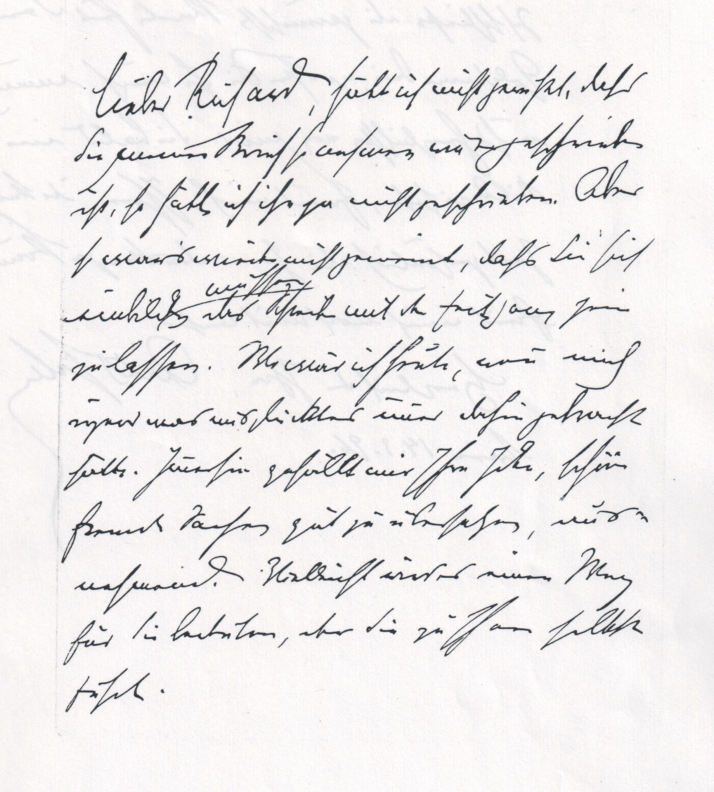

Every page, every backend
real-kaskel-to-schnorr-1864

cer 0.225wer 0.634cer_norm 0.207wer_norm 0.549lines 24$ 0.0000s 17.43
Diff against ground truth: missing or wrong extra or substituted
HſochvgerehrteſtirFreunnd!. So herrlich und unvergleichlich, als gesſtern im unsſterblichen Werke. Meyerbeerrs, habe ichIAhrensſo. hoöchvoertrecfflichen Sohn unied gehört,obwohlerstedats der ersſteTlenor der GegenwartistHh. Meine Freuinde wuürde veordoppggelt, als ichsſeinensſo hochvrerehrten, und ebenfalls unvergleichlichenVNaterunter denZzuhörern erblickteh und mirsſagte wasdDiesſer da empingfinden müßte!: Aber meinemund verewrigten. großenFStreunde waor, ach!: das Glück nicht besſchierden,sſeinenRKaounlsozu hören!:GHotrt erhalteSive!r.Ihram 30 uny. 1864. treun ergebenster Carl Kaskdtel am 30. Juny 1864e
Output as written
ſochgeehrteſtir rennd. So herrlich und unvergleichlich, als geſtern im unſterblichen Werke. Meyerberrs, habe ich Ahren ſo. höchercfflichen Sohn und ghört obwohler dats der erſte lenor der Gegenwart Hh. Meine Frinde würde vordoggelt, als ich ſeinen ſo hochrerehrten, und ebenfalls unvergleichlichen Nate unter den zuhörern erblich und mir ſagte was Dieſer da eingfinden müße: Aber menund vererigten. großen Streunde wor, ach: das Glück nicht beſchirden, ſeinen Kaonl zu hören: Hort erhalte ver. am 30 uny. 1864. tren ergebener Carl Kadtee
output: 01-use-cases/transcription/03-layout-and-hybrid/outputs/runs/hand-20261105/kraken/german_handwriting.mlmodel/real-kaskel-to-schnorr-1864.txt · PAGE-XML beside it
real-poesiealbum-hedwig-1901-p02

cer 0.823wer 0.970cer_norm 0.819wer_norm 0.970lines 39$ 0.0000s 17.1
Diff against ground truth: missing or wrong extra or substituted
[W2 er Gott vgerläßt unndSünde thut,Beraubt sich wahrer Freuden; Ihm fehlt Beruhigung und Mutz In Trübsal, Schmer und Lſeiten. Das Scheinglück, das er sich versprrach, Läßt nichts, als Gram und Reue nach.] Wer Sünde thut, sieht Schrecken[voll] seinletztesEndek. als 5 ommffendie Hoffnung, die Ihn tröstent.soll,herte ß ſet. ſischtsdeinem Geist benommenrEr liTebteGHr enst alg. de Schreet. kom me Then Troſttse beare 41. undJesum nicht, und aufdem Todtſefolgtdas GerichtnGero H. Peters4Suurh[ausen][So folget Trübsal, Angst und PeindemLaster schon auf Erden;Unendlich größer wird die Pein In jenem Leben werden.Ach fürchlme. Lod2 21eterlich ist beides mir, Ach führ vom Laster mich zu dir.]
Output as written
2 e genndu ſei letztes de. als 5 offen tet. herte ß ſet. ſicht der Tebte Hr enst alg. de Schreet. kom me Then Troſt se beare 41. und deſe dan 4 dem e . lme. Lod2 21et
output: 01-use-cases/transcription/03-layout-and-hybrid/outputs/runs/hand-20261105/kraken/german_handwriting.mlmodel/real-poesiealbum-hedwig-1901-p02.txt · PAGE-XML beside it
real-schnitzler-to-beer-hofmann-1896

cer 0.453wer 0.902cer_norm 0.429wer_norm 0.878lines 12$ 0.0000s 12.76
Diff against ground truth: missing or wrong extra or substituted
lieberRAufan ſollichardnſtjemhet, daß die wanier Strruſſ.anhäeen wrtfeſchrek. iſt, ſ. Call ich ihn zu nicht gewußt, dass Sie meinen Brief so nehmen wie er gesſchrieben ist, so hätte ich ihn ja nicht geschriebken. Abersoſ war’s wiederdt, nichtgemweint, daßs E ſich wklde ds Sihesich einbilden müssen, das Schreibenk mitderKZfeit galſonz sein, zen zulasseſſen.WMowariſſrulwär ich heute, wenvon michiragendr was misglüzicktesimmunerdahe getracht ſolt. Wr ſin gebrhachltthätte. Immerhin gefällt miwrIJhreIdePte,sſchöne fü„ FremnndeSachengutzuübznlersſchetzen,auus? nehmeind.? Vielleichtwirdanes noeinMenWegfürSſie bedecutlen, obe der Sie zuſherIhnen sſelbst führte eſil.
Output as written
liebe Aufan ſollichnſtjemhet, daß die wanier Strruſſ.anheen wrtfeſchrek. iſt, ſ. Call ich ihn zu nicht geſchrieken. Aber ſ wars werdt, nich geweint, daßs E ſich wklde ds Sheck mit K feilſon, zen zuleſſen. Mowariſſrul von mich ager was miszicktes une dahe getracht ſolt. Wr ſin gehaltt wr Jhre Pte, ſchü„ Frennd Sachen zuznleſche, uus? nehmein? Vellicht anes noe Men für ſie beculen, obe die zuſher ſelbhe eſil.
output: 01-use-cases/transcription/03-layout-and-hybrid/outputs/runs/hand-20261105/kraken/german_handwriting.mlmodel/real-schnitzler-to-beer-hofmann-1896.txt · PAGE-XML beside it